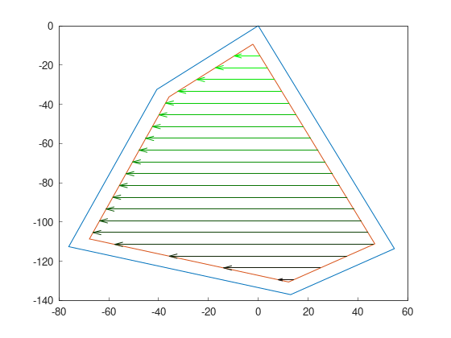

Part 5: Route planning
A route planner searches the best order to cover previously generated swaths. Usually, metaheuristics are used in the search.
Note
In this version of Fields2Cover, no metaheuristic is provided, only predefined patterns.
Route patterns do not return F2CRoute, but F2CSwaths instead.
In the next version, route planners will support metaheuristics, F2CCells as inputs, and F2CRoute as output.
For these examples, we will continue from the previous tutorial:
f2c::Random rand(42);
F2CRobot robot (2.0, 6.0);
f2c::hg::ConstHL const_hl;
F2CCells cells = rand.generateRandField(5, 1e4).field;
F2CCells no_hl = const_hl.generateHeadlands(cells, 3.0 * robot.robot_width);
f2c::sg::BruteForce<f2c::obj::NSwath> bf;
F2CSwaths swaths = bf.generateSwaths(M_PI, robot.op_width, no_hl.getGeometry(0));
Once planned the swaths, it would be awesome to find the best order to cover the field. To plot the order, we have used green for earlier covered swaths and black for last covered. The direction of swaths is also green dot to black cross.
Boustrophedon order
Boustrophedon pattern is one of the most known patterns to cover a field. Swaths are traveled in the simplest order, covering first the first swath, then the second, and so on. This pattern can have 4 results on the same field, depending on the start point.
With the next code, swaths are order as the first image.
Calling again genSortedSwaths produces the other variants.
Once it has been called 4 times, the loop starts over.
f2c::rp::BoustrophedonOrder boustrophedon_sorter(swaths);
swaths = boustrophedon_sorter.genSortedSwaths();
|
|
|


Snake order
Snake order covers the field skipping one swath each turn, and then coming back using uncovered swaths. This pattern, compared to boustrophedon, reduces the number of sharp turns.
As with boustrophedon pattern, snake pattern also has 4 variants:
f2c::rp::SnakeOrder snake_sorter(swaths);
swaths = snake_sorter.genSortedSwaths();
|
|
|


{kind=link}
{kind=link}
{kind=link}